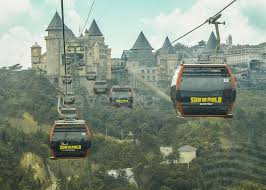
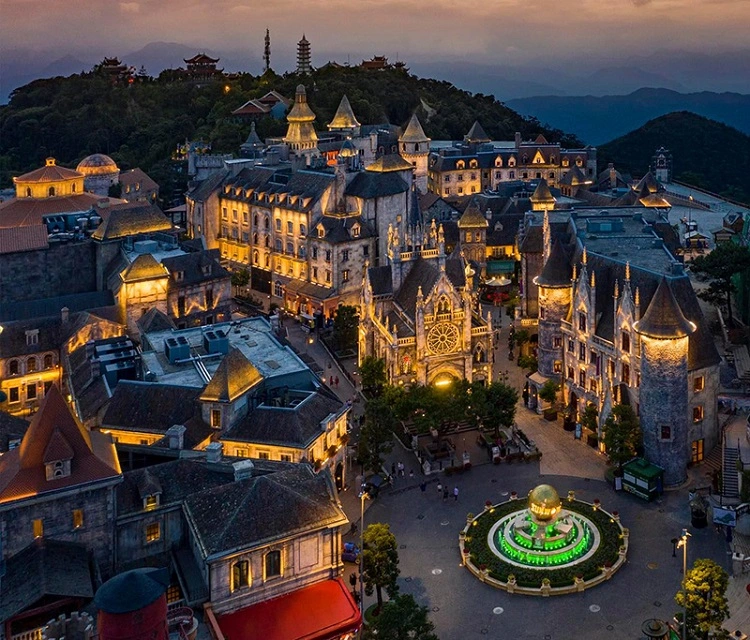

Cầu Vàng Đà Nẵng - công trình kiến trúc độc đáo nằm ở độ cao 1.414m so với mực nước biển, nhanh chóng trở thành biểu tượng du lịch mới của thành phố biển xinh đẹp. Với thiết kế hai bàn tay khổng lồ nâng đỡ, cây cầu như một tác phẩm nghệ thuật giữa mây trời Bà Nà.
1. Giới thiệu về Cầu Vàng
Vị trí: Khu du lịch Sun World Ba Na Hills, xã Hòa Ninh, huyện Hòa Vang
Chiều dài: 150m, gồm 8 nhịp
Độ cao: 1.414m so với mực nước biển
Thiết kế: Công ty TA Landscape Architecture (Việt Nam)
Khánh thành: Tháng 6/2018
Giá vé: Bao gồm trong vé cáp treo Bà Nà (750.000đ/người lớn)
2. Trải nghiệm khi tham quan Cầu Vàng
Check-in với "bàn tay khổng lồ"
• Góc chụp đẹp nhất là từ phía đầu cầu nhìn về hai bàn tay
• Nên đi sớm (8-10h sáng) để tránh đông và có ánh sáng đẹp
Đi bộ trên "con đường giữa mây"
• Cảm giác như lơ lửng giữa không trung khi mây xuống thấp
• Nhiệt độ trung bình 17-20°C, mát mẻ quanh năm
Ngắm toàn cảnh từ cầu
• View nhìn xuống thung lũng và rừng núi Bà Nà
• Có thể nhìn thấy biển Đà Nẵng vào ngày quang đãng
3. Cách di chuyển đến Cầu Vàng
Từ trung tâm Đà Nẵng
• Xe máy/ô tô: Theo QL1A về hướng Tây khoảng 25km (45 phút)
• Taxi: Giá khoảng 300.000-400.000đ/lượt
• Xe bus: Tuyến Đà Nẵng - Bà Nà (20.000đ/người)
Hệ thống cáp treo Bà Nà
• 5 tuyến cáp treo hiện đại
• Tuyến dài nhất: 5.801m (kỷ lục thế giới)
• Thời gian lên đỉnh: khoảng 20 phút
4. Các điểm tham quan gần Cầu Vàng
Làng Pháp
• Kiến trúc châu Âu cổ điển
• Các show biểu diễn đường phố
Chùa Linh Ứng Bà Nà
• Tượng Phật trắng cao 27m
• Không gian tâm linh thanh tịnh
Fantasy Park
• Khu vui chơi trong nhà lớn nhất Đông Nam Á
• Hơn 90 trò chơi hiện đại
5. Mẹo tham quan hữu ích
- Thời điểm đẹp nhất: Tháng 3-8 (trời ít mưa, nhiều nắng đẹp)
- Trang phục: Mang áo khoác nhẹ dù là mùa hè (nhiệt độ trên núi thấp hơn dưới phố 6-8°C)
- Giờ đẹp: Sáng sớm (7-9h) hoặc chiều muộn (3-5h) để tránh đông và có ánh sáng đẹp
- Combo tiết kiệm: Mua vé online trước để được giảm 10-15%
- Dịch vụ: Có locker để đồ tại chân cáp treo (50.000đ/locker)
6. Các khách sạn gần Bà Nà

Mercure Danang French Village Bana Hills
• Giá từ 3.000.000đ/đêm
• Nằm ngay trong khuôn viên Sun World
Le Jardin Danang Hotel
• Giá từ 1.500.000đ/đêm
• Cách Bà Nà 15 phút lái xe
Brilliant Hotel Danang
• Giá từ 1.200.000đ/đêm
• View biển, thuận tiện di chuyển
Cầu Vàng Đà Nẵng không chỉ là một công trình kiến trúc độc đáo mà còn là minh chứng cho sự sáng tạo không giới hạn của con người. Đứng giữa lưng chừng núi, ngắm nhìn đôi bàn tay khổng lồ như đang nâng đỡ bước chân du khách, bạn sẽ có những trải nghiệm và bức ảnh check-in ấn tượng nhất trong hành trình khám phá Đà Nẵng.